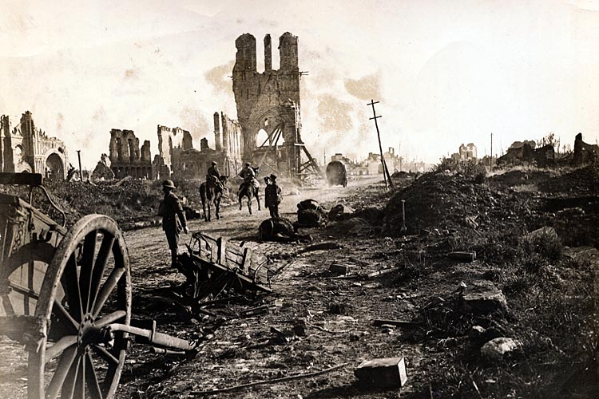

II. Why Are There Wars?
Justin Leinaweaver (Fall 2026)

Neorealism
Offensive Realism
Liberal Institutionalism
Economic Liberalism
Bargaining Model of War
Interests
Institutions
Interactions
Let’s diagram the model!
Who are the key interests?
What are the key institutions?
What are the primary interactions that matter?
Interests
Institutions
Interactions
Interests
Institutions
Interactions
Interests
Institutions
Interactions
On the Board:
Make a list of the characteristics of a “great” power
Give us ten countries that pass your test
Waltz, K. (1979). Theory of International Politics. McGraw-Hill.
Size of population & territory
Resource endowment
Economic capability
Military strength
Political stability and competence
Offensive Realism
Liberal institutionalist readings in the syllabus
Before class submit to your analyses of the readings to Canvas
Slides for different number of classes this week
Writing Workshop